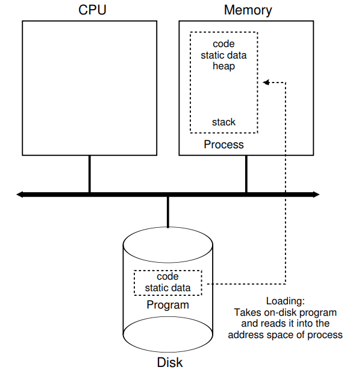
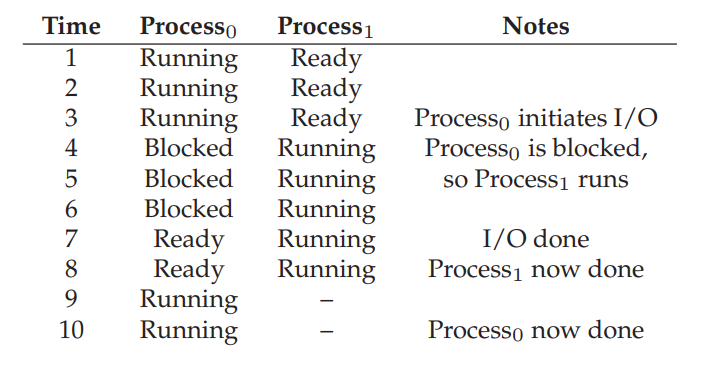

Abstraction: The process#
1. What is a program?#
A program is a static list of intsructions and data.
When a program runs, the OS takes this list and asks the CPU to execute them.
If we only have one CPU, how can we run more than one program at a time.
2. What is a process?#
A process is a running program.
But the program itself is not running …
A process is an abstraction provided by the OS to describe the running of a program.
What is a process made of?
Memory that the process (running program) can address.
Memory registers.
Program counter.
Stack pointer.
Frame pointer.
I/O devices.
3. Process API#
The operating system provides an API to help managing processes. Minimally, the followings are provided:
Create: an OS must have some methods to create new processes to run programs.
Destroy: interface to destroy process forcefully.
Wait: temporarily pausing the process.
Miscellaneous Control: suspend and resume processes.
Status: provide status about the state of the process.
Program counter.
Stack pointer.
Frame pointer.
I/O devices.
4. Process creation#
When a program is run, the OS performs the following steps:
Load a program’s code and static data into memory (the virtual address space of the process).
Allocate memory for run-time stack (for stack).
Allocate memory for heap (used for dynamic memory allocation via
mallocfamily).Initialization:
File descriptor for standard input.
File descriptor for standard output.
File descriptor for error.
In Linux, everything is a file.
Begin executing from main().
5. Loading: from program to process#

Process states#
A process can be in one of the three states.
Running: the CPU is executing a process’ instructions.
Ready: the process is ready to run, but the OS is not running the process at the moment.
Blocked: the process has to perform some operation (e.g., I/O request to disk) that makes it not ready to run.
Process: state transition#

Process: state transition#
When a process moves from ready to running, this means that it has been scheduled by the OS.
When a process is moved from running to ready, this means that it has been descheduled by the OS.
When an I/O request (within the process) is initiated, the running process become blocked by the OS until the I/O request is completed. Upon receiving the I/O completion signal, the OS moves the process’ state from blocked to ready, to wait to be scheduled by the OS.

Process: data structure#
The OS is a program, and will data structures to track different pieces of information. that it has been scheduled by the OS.
How does the OS track the status of processes?
process list for all processes.
additional information for running process.
status of blocked process. from blocked to ready, to wait to be scheduled by the OS.
Example: xv6#
Educational OS developed and maintained by MIT since 2006.
[Register contexts and status definition for a process][xv6_process]
Example: Linux#
[Task struct in Linux][linux_task_struct]: Lines 631-1329
[Register contexts defined for each process][linux_x86_tss]: Line 267-312
[x86 CPU architecture model][https://en.wikibooks.org/wiki/X86_Assembly/X86_Architecture]